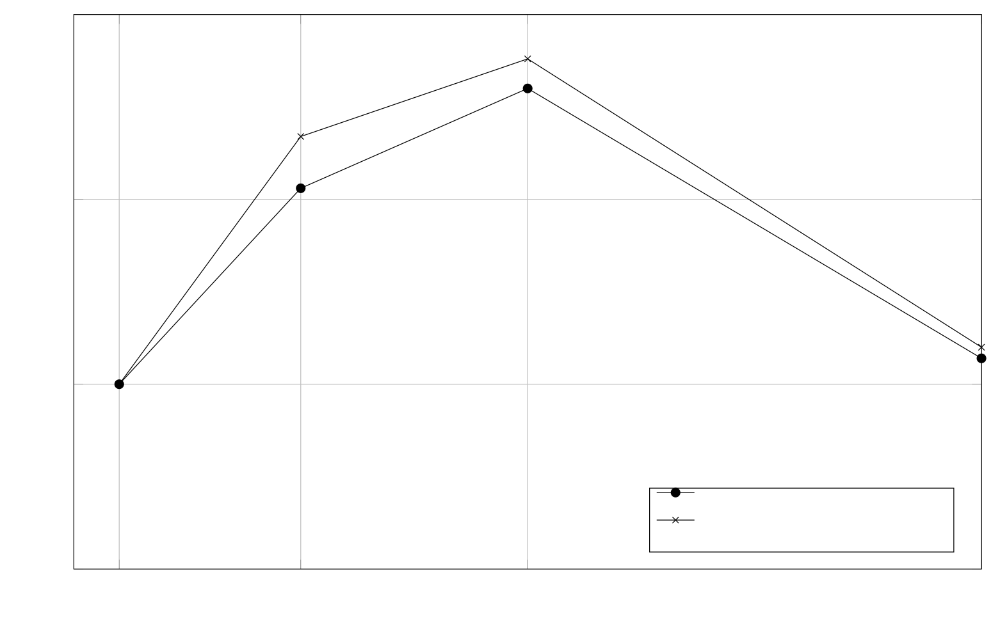

Doc2Query 详解：索引前用预测查询扩展文档¶
paper：Document Expansion by Query Prediction（Nogueira, Yang, Lin, Cho；arXiv:1904.08375v2，2019-09-25） code：nyu-dl/dl4ir-doc2query backbone：Transformer base（OpenNMT；编码器/解码器各 6 层，512 隐维，8 头，前馈 2048）→ 扩展后用 Anserini BM25；可选 BERT 重排（TensorFlow） date：2019-09（v2） modality：文本段落检索；文档扩展后的稀疏倒排，可选神经重排 languages：英文（MS MARCO、TREC-CAR）
全文逐段中英对照见同目录 zh.md。本文把方法、解码、两张表和附录里的训练细节写清。数字只取论文表内和正文里写出的原值。论文没有单列公式，下面的符号只是把正文步骤写成可对照的形式。
词汇不匹配（vocabulary mismatch）：用户查询里的词和相关文档里的词对不上。精确词项匹配会漏掉同义、改写、上位说法。文档扩展（document expansion）：建索引之前给文档补上相关词项。本文补的是模型预测出来的查询，不是人工同义词表。查询扩展（query expansion）：文档表示不动，在检索时把查询变丰富。RM3 是其中一种伪相关反馈，步骤见下文「RM3 这个对照基线在做什么」。BM25：基于词项的排序函数，本文用 Anserini 在倒排上计算；论文引用 Okapi at TREC-3，没有在正文展开公式。序列到序列（sequence-to-sequence）：编码器读入文档，解码器逐词写出一条查询。BPE（byte-pair encoding）：把词再切成子词，稀有词也能被模型看见。MRR@10：若相关文档出现在前 10，取最高相关名次的倒数，再对查询平均。MS MARCO 官方指标。MAP：每条查询的平均精度再对查询平均。TREC-CAR 用这个。Recall@1000：相关文档落在前 1000 的比例。
这篇实际在做什么¶
搜索引擎要在查询词和文档词对不上时仍然召回相关文档。神经模型可以做语义匹配，但语料太大，不能对每条查询、每篇文档都跑一遍网络。当时可扩展的系统仍是倒排加 BM25 做初检，神经网络只重排一小批候选。
Doc2Query 把神经网络挪到索引之前。用（查询，相关文档）对训练一个文档到查询的 Transformer。对语料里每篇文档采样 10 条预测查询，不加标记地拼到原文后面，再用普通 BM25 检索。检索时不再跑这个生成模型。需要更高精度时，再按 Nogueira and Cho (2019) 用 BERT 重排 top-1000。
从问答角度看，一篇文档可以用「它能回答哪些问题」来刻画。把这些问题写进文档，用户后来的真实问法更容易和倒排里的词撞上。
| 项 | 论文设定 |
|---|---|
| 模型 | Vaswani et al. (2017) base Transformer；OpenNMT |
| 输入截断 | 文档 400 token，查询 100 token |
| 分词 | Moses，再 BPE |
| 解码 | top-k 随机采样，每篇文档 10 条查询 |
| 拼接 | 预测查询直接接在原文后，无特殊标记 |
| 检索 | Anserini BM25；评测用 top-1000 |
| 可选重排 | BERT，Google TPU |
| 训练 | 批 4096 token，最多 30 epoch，四块 V100；Adam，学习率 \(10^{-3}\) |
| 早停 | 训练与开发 BLEU 相差超过 4 个点即停 |
图 1 在讲什么¶

图在讲什么。 左上是输入文档，例子是肉桂降低血糖。Doc2query 写出一条预测查询 “does cinnamon lower blood sugar?”。中间把原文和这条查询拼成 Expanded Doc，没有加分隔标记。拼好的文档进入索引。用户查询 “foods and supplements to lower blood sugar” 打到搜索引擎，得到更好的检索文档。读者应看到：生成发生在索引前，线上查询路径仍是原来的搜索引擎。图里只画了一条预测查询；正文的默认设定是每篇文档追加 10 条。
和查询扩展走的不是同一侧¶
相关工作把历史方法分成两侧。一侧增强查询：相关反馈、查询扩展、把检索看成统计翻译。一侧增强文档：Tao 等人的语言模型文档扩展、Pickens 等人的反向索引、Efron 等人的短文本扩展，以及更早的语音检索文档扩展。文档扩展不流行，因为技术一改就要重建索引；Billerbeck and Zobel (2005) 在同一框架里比较两侧，结论是查询扩展一直更好。
神经排序综述（Onal et al., 2018；Mitra and Craswell, 2019a）说明连续表示能学非线性相关性，但推理不能铺到全库。常见部署是 BM25 取候选，网络只做重排。Doc2Query 仍用这条部署：神经部分只负责在索引前改文档，词项检索本身不变。重排仍可加上，但作者认为只做词项排序已经不错。
RM3 这个对照基线在做什么¶
本节是补充背景，不在 Doc2Query 正文里。Doc2Query 只引用 Abdul-Jaleel et al., 2004（UMass at TREC 2004: Novelty and HARD）一句话，没有展开。下面的流程、公式、参数取自该报告第 3.1.3–3.1.4 节与 HARD 提交说明。
RM3 是伪相关反馈（pseudo-relevance feedback）式的查询扩展。RM 指 Lavrenko and Croft 的相关模型（relevance model），UMass 报告自己的说法是「通过盲反馈做大规模查询扩展」。编号 3 指其中一个变体：把估出来的相关模型和原始查询模型做线性插值的那一版。名字「RM3」来自该报告的提交名 UMassBaseRM3，后来 Indri / Lemur / Anserini 沿用。
核心假设：用户查询太短，词项覆盖不够。但先检索一遍之后，排在最前面的几篇文档大概是相关的，于是可以从这些文档里「借」词把查询补全。整个过程不需要真人标注反馈，所以叫伪相关（盲）反馈。
跑两轮检索：
- 用原查询做第一轮排序，取 top-\(N\) 篇作为反馈集 \(R\)。
- 在 \(R\) 上估相关模型。对词 \(w\)：
即每篇反馈文档贡献一份 \(P(w|D)\)（Dirichlet 平滑过的文档语言模型），权重是这篇文档归一化后的查询似然。一个词要拿到高分，得在多篇高分文档里反复出现。
- 按概率降序截断，只留 top-\(M\) 个词，再归一化到和为一。原报告写明截断发生在插值之前。
- 与原查询模型插值，这步是 RM3 相比 RM1 的全部区别：
- 拿 \(P'(w|R)\) 顶替查询模型的位置，做第二轮排序。该报告的排序式是 KL 散度，\(\mathrm{score}(D,Q) = \sum_w P(w|Q) \log \frac{P(w|Q)}{P(w|D)}\)，其中 \(P(w|Q)\) 这一槽位换成扩展后的 \(P'(w|R)\)；该报告指出它与查询似然排序等价。
第 4 步很要命。原报告的理由是：相关模型刻画的是返回文档的行为，把原查询丢掉了，插值用来保住原查询里的信息。纯 RM1 容易 query drift——反馈文档里有噪声，扩展词把查询带跑偏，原始意图反而被淹没。
参数上，该报告 UMassBaseRM3 这条 HARD 提交用的是：反馈集取第一轮前 50 篇，相关模型截断到概率最高的 200 个词且概率不低于 0.001，前景模型（原查询，即 title + description）混合权重 0.6（对应上式 \(\lambda = 0.4\)），文档语言模型用 Dirichlet 先验、参数 1000。Doc2Query 用的 Anserini 实现把这三个量暴露成 rm3.fbDocs、rm3.fbTerms、rm3.originalQueryWeight，常见默认是 10 / 10 / 0.5，和上面这组原始设定并不相同；Doc2Query 没写它具体取了哪组。
和本文方法对照着看，两者治的是同一个病（词汇不匹配），但下手的位置相反：
| 扩展对象 | 发生时机 | 线上代价 | |
|---|---|---|---|
| RM3 | 查询 | 检索时 | 每条查询两轮检索 |
| Doc2Query | 文档 | 建索引前 | 只是文档变长 |
这正好解释表 1 的延迟列：BM25 50 ms，加 RM3 变 250 ms（多一轮检索），而 Doc2Query 只到 90 ms，因为生成在离线做完了。两者原理上正交，可以叠加，论文的 BM25 + Doc2query + RM3 就是这条。效果见「主表」一节：这两个集合上 RM3 单加、叠加都掉点。
训练、拼接、检索¶
监督来自数据集里已有的（查询，相关文档）对。模型输入文档词，输出一条查询。这不是无监督同义词扩展：目标查询是真实用户（或数据集构造）曾经用来命中这篇文档的问法。
结构与 Vaswani base 相同。训练用 Adam，\(\beta_1 = 0.9\)，\(\beta_2 = 0.998\)，L2 权重衰减 0.01，前 8,000 步预热学习率，之后线性衰减，各层 dropout 0.1。早停看的是 BLEU 差距，不是检索指标。检索指标留到扩展、索引之后再测。
训完之后，对语料中每篇文档做 top-k 随机采样，得到 10 条查询，原样追加。索引和排序与不扩展时同一套 BM25。可选步骤是用 BERT 重排这 1000 篇。
附录 B 比较束搜索和 top-k 随机采样，横轴是追加条数 1、5、10、20。top-k 在各束宽上略好于束搜索，10 条时检索效果达到峰值。图中标出的开发集 MRR@10 是 21.5，与主实验 BM25 + Doc2query 的开发集数字相同。作者的解释是：条数太少，语义匹配不够多样；条数太多，噪声上来，原文在文档表示里的比重被稀释。

曲线上其余点论文没有逐点列表。
两个数据集，五条对照¶
MS MARCO 是段落重排集：880 万段落，来自必应对 100 万查询的 top-10。训练约 50 万对，平均每条查询一个相关段落。开发集和测试集各约 6,900 条查询，标签只公开开发集。指标是 MRR@10。
TREC-CAR 的查询是维基文章标题加上某一节的标题，相关文档是该节里的段落。语料是英文维基段落，不含摘要。前四折训练（约 300 万查询），剩下一折验证（约 70 万）。测试集与 TREC-CAR 2017 相同，约 2,250 条查询。指标是 MAP。
对照不是换检索器，而是换文档侧或查询侧的扩展，以及要不要 BERT：
| 条件 | 文档 | 查询侧 | 重排 |
|---|---|---|---|
| BM25 | 原文 | 原查询 | 无 |
| BM25 + RM3 | 原文 | RM3 | 无 |
| BM25 + Doc2query | 原文 + 10 条预测查询 | 原查询 | 无 |
| BM25 + Doc2query + RM3 | 已扩展文档 | 再做 RM3 | 无 |
| BM25 + BERT | 原文 | 原查询 | BERT |
| BM25 + Doc2query + BERT | 已扩展文档 | 原查询 | BERT |
另外两行是外部参照：Single Duet v2 是 MS MARCO 组织者给出的神经基线；Co-PACRR 是 TREC-CAR 2017 的最佳提交。
主表：扩展约抬一截，和 BERT 叠加¶
表 1。空单元格论文为横线，这里写成 —。时间单位是毫秒/查询。
| 方法 | TREC-CAR MAP | MS MARCO Test MRR@10 | MS MARCO Dev MRR@10 | ms/query |
|---|---|---|---|---|
| Single Duet v2 | — | 24.5 | 24.3 | 650⋆ |
| Co-PACRR♠ | 14.8 | — | — | — |
| BM25 | 15.3 | 18.6 | 18.4 | 50 |
| BM25 + RM3 | 12.7 | — | 16.7 | 250 |
| BM25 + Doc2query | 18.3 | 21.8 | 21.5 | 90 |
| BM25 + Doc2query + RM3 | 15.5 | — | 20.0 | 350 |
| BM25 + BERT | 34.8 | 35.9 | 36.5 | 3400† |
| BM25 + Doc2query + BERT | 36.5 | 36.8 | 37.5 | 3500† |
⋆ 作者测量：Duet v2 本身 600 ms，加上 BM25 的 50 ms，表内写成 650。♠ TREC-CAR 2017 最佳提交。† BERT 重排跑在 Google TPU 上。论文脚注说明：MS MARCO 榜单最上面的条目没有系统描述，因此无法和那些系统直接比；「接近当时最优」指的是这个限制下的说法。
只看不重排的一行。TREC-CAR 上 MAP 从 15.3 到 18.3，高于 Co-PACRR 的 14.8。MS MARCO 开发集 MRR@10 从 18.4 到 21.5，测试集从 18.6 到 21.8。论文把两边都概括成约 15% 的检索效果提升。
RM3（做法见「RM3 这个对照基线在做什么」）在两边都掉点。未扩展语料上，TREC-CAR MAP 12.7，低于 BM25 的 15.3；MS MARCO 开发集 16.7，低于 18.4。扩展之后再加 RM3，TREC-CAR 15.5，仍低于只做 Doc2query 的 18.3；开发集 20.0，也低于 21.5。论文认为这两个集合偏精度，伪相关反馈引入的词帮倒忙。文档比查询长，可抄、可改写的信号更多，所以扩展文档比扩展查询更合适。
BERT 把绝对分抬到另一个量级：TREC-CAR MAP 34.8，加上 Doc2query 后 36.5；MS MARCO 开发集 36.5 到 37.5，测试集 35.9 到 36.8。叠加仍有增益，所以文档扩展不是重排的替代品，而是在进重排之前把候选池变好。
延迟：BM25 50 ms，Doc2query 后的 BM25 90 ms。Single Duet v2 的 MRR@10 比 Doc2query 高大约三个点（开发集 24.3 对 21.5），时间大约是七倍（650 对 90）。BERT 重排在 3400–3500 ms。论文把不加重排的 Doc2query 放在「用一点质量换速度」的位置上。
分数从复制词和新词两边来¶
表 2 是 MS MARCO 上的三个预测例子，用来说明模型在做什么，不是定量主结果。
| 预测查询 | 真实目标查询 | 论文点出的现象 | |
|---|---|---|---|
| 华盛顿气温段落 | weather in washington dc | what is the temperature in washington | 抄了 Washington；写出原文没有的 weather |
| 特拉华河段落 | what river flows through delaware | where does the delaware river start and end | 抄了 river；问法与目标不同 |
| 性染色体词条 | what is the relationship between genes and chromosomes | which chromosome controls sex characteristics | 抄了 chromosome；写出原文没有的 relationship |
第一例的输入写明七月平均 27C（80F）、一月 4C（38F）、七月日照 9 小时、五月降雨 100mm。第二例原文是 “It flows through and aqueduct in the Roundout Reservoir”，按论文用词保留。第三例是性染色体词条：哺乳动物通常两条性染色体，人类 22 对再加两条。
去掉停用词之后做词来源统计。停用词占预测查询词的 51%。剩下的词里，31% 是原文没有的新词，69% 是从原文复制的词。
只用其中一种去扩展 MS MARCO，再在开发集上跑 BM25：
| 扩展用的词 | 开发集 MRR@10 |
|---|---|
| 不扩展（原文索引） | 18.4 |
| 只用新词 | 18.8 |
| 只用复制词 | 19.7 |
| 两种都用（主实验） | 21.5 |
复制词的作用是词项再加权：关键词在文档里多出现几次，BM25 会把它看得更重。新词的作用是同义或相关说法，让查询里原文没有的词也能命中。两边单独都高于 18.4，合在一起才到 21.5，所以论文说它们互补。
另一条提升来自候选池。MS MARCO 开发集 Recall@1000 从 BM25 的 85.3 升到 BM25 + Doc2query 的 89.3。BERT 能从这批多出来的相关文档里把正确答案排到前面，所以 MRR 继续涨。这解释了表 1 里 BERT 行和 Doc2query + BERT 行的差距。
论文里写到的边界¶
论文没有单独的局限性一节。正文和附录里实际写出的限制是这些。
文档扩展每次改方法都要重建索引，实验比改查询慢。这是相关工作里作者承认的历史原因，本文没有消除它，只是把神经计算放进离线索引。
RM3 在这两个集合上有害。结论「文档扩展比查询扩展更有效」限定在 MS MARCO 和 TREC-CAR 这种偏精度的设定，论文自己把 RM3 变差归因于此。
查询条数有峰值。附录 B 写明太少则多样性不够，太多则噪声上来并稀释原文。主实验固定为 10 条，不是任意条数都更好。
榜单比较不完整。MS MARCO 测试集标签不公开，表 1 的 Test 列因此有多处 —；榜单顶部系统没有描述，论文明确说无法与之比较。
早停看 BLEU 而不是 MRR 或 MAP。生成质量和检索效果不是同一个目标，论文没有报告二者是否一致。
图 2 只标出 21.5 这一个读数，没有给出 1、5、20 条时的表。比较束搜索和采样时，只能按论文的文字结论读：采样略优，10 条为峰。